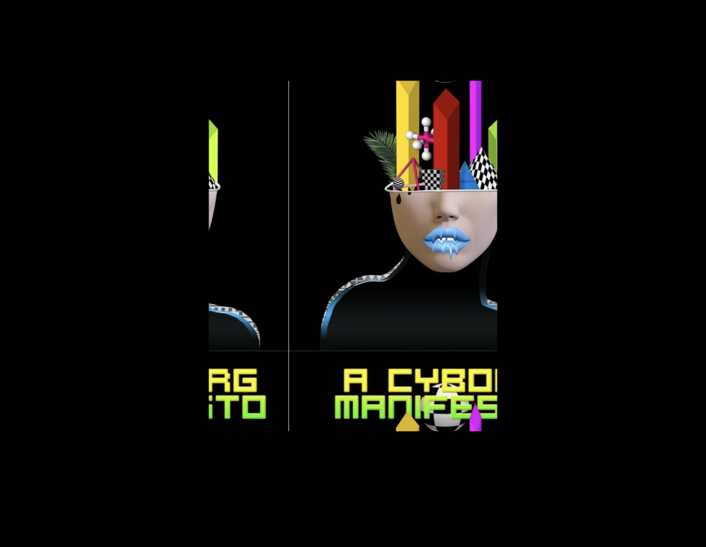
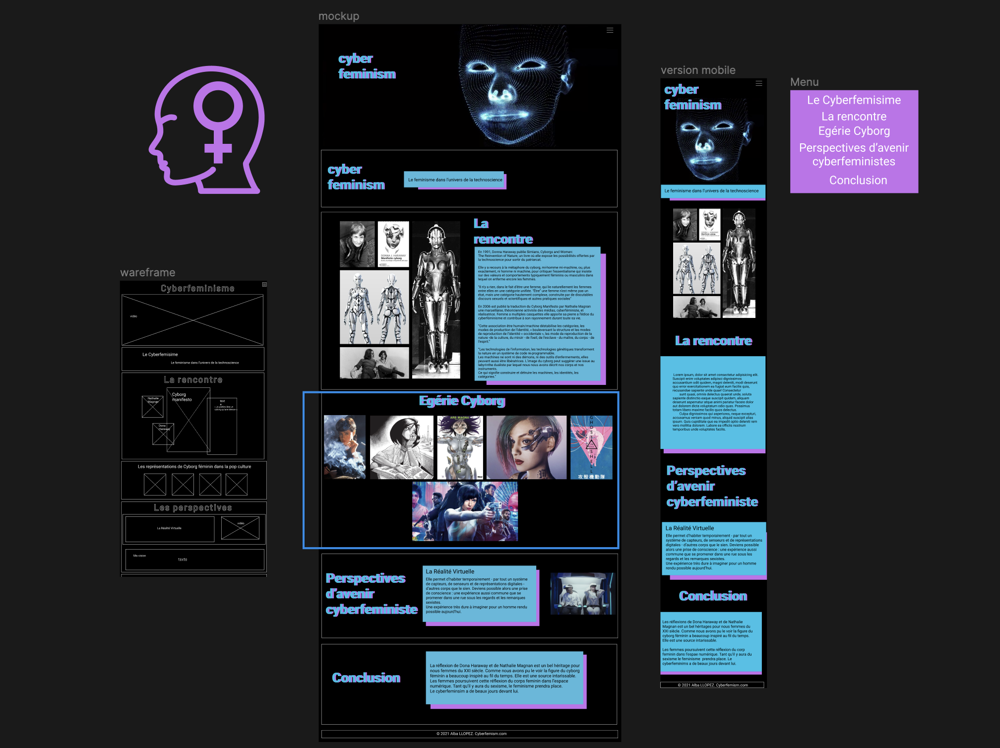

" Femmes et numérique : je code donc je suis ! "
1
Recherches
Pour traiter la problèmatique j'ai choisi de me pencher sur les travaux de Donna Haraway. J'ai aussi voulu rendre hommage à Nathalie Magnan qui a traduit le livre de Donna Haraway "The Cyborg Manifesto"


2
Maquettage
J'ai utilisé Figma pour maquetter ce premier projet. J'ai d'abord réalisé un Wireframe. Puis j'ai fait un pemier Mockup que j'ai ensuite amélioré. J'ai réalisé la maquette de format mobile.

Programmation
J'ai maquetté & programmé ce tout premier projet personnel en quelques jours. J'ai pu ensuite le présenter devant un jury. J'ai reppris ce site one page quelques mois après pour lui apporter des améliorations. J'ai utlisé l'IA Midjourney pour générer cette représentation du Cyborg.